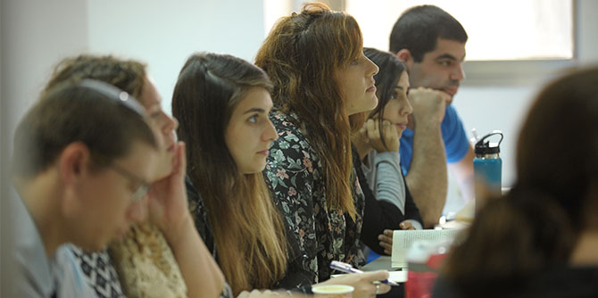

At the beginning of November, the second cohort of the Mandel Program for Youth Leadership, which is designed for senior informal educators in Israel’s youth movements and youth organizations, was launched at the Mandel Leadership Institute.
The goal of the one-year program is to help the senior leadership of Israel’s youth movements and youth organizations to create a shared platform for exploring different aspects of informal education, and the challenges they face today.
There are 22 fellows in the second cohort, most of them aged 27 to 35. All of them are senior leaders in youth movements or youth organizations, including the Israel Scouts, Hanoar Haoved Vehalomed (Working and Studying Youth), Bnei Akiva, Ariel, Hamahanot Haolim, AJYAL (the Arab division of Hashomer Hatzair), Kadima Youth, Latet Youth, Aharai, and the JNF’s Green Horizons. The program helps participants hone their educational identities, deepen their theoretical and practical knowledge, and develop their ability to translate their educational worldviews into practice.

“Informal education in Israel is one of the few settings in which it’s possible to bring together people from different places and with different viewpoints,” said
Dr. Eli Gottlieb, director of the Mandel Leadership Institute, at the start of the program. “In fact, the diversity and difference that embody Israeli society can be clearly seen in this hall,” he continued. “It is this multicultural conversation that the Mandel Leadership Institute wants to nurture and strengthen.”
The opening lecture of the program, “The Purpose of Humankind,” was given by
Rabbi Dr. Benjamin (Benny) Lau, rabbi of the Ramban synagogue in Jerusalem and director of the 929 Tanakh B’Yachad daily Bible study initiative.
Dani Rosner, the director of the Ministry of Education’s Society and Youth Administration, quoted the words of the late Prime Minister Yitzhak Rabin at a meeting of Hanoar Haoved Vehalomed: “If there’s something that characterizes youth, it’s rebelling against accepted norms. Not rebelliousness for the sake of rebelliousness, but rebelliousness for the sake of change… Keep what should be kept, and change what should be changed There are many things that need changing.”
The Mandel Program for Youth Leadership, which takes place at the Mandel Leadership Institute in Jerusalem, comprises lectures, workshops, case studies, field trips, and meetings with educational, social, and cultural figures. Subjects covered include: philosophical, sociological, and psychological aspects of education; social justice and social change; contemporary Jewish and Zionist identity; and challenges facing Israeli society. The program is directed by
Miki Nevo, and the program team includes Yaron Girsh and Odeya Levin-Sousanna.
{kind=link}